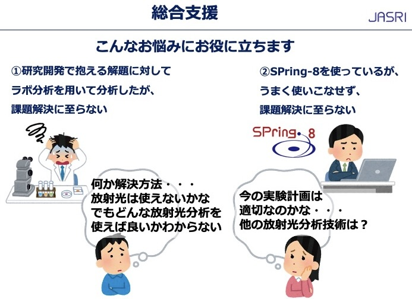
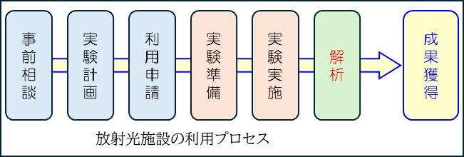

総合支援のご案内
総合支援では、産学を問わず「ものづくり」に携わる研究・開発を行っている方々へ、SPring-8を利用した成果の獲得のための様々な支援を行っています。
初歩的なお悩みから相談にのり、分析手法の選定や実験計画作成の補助、利用申請手続きや、実験準備、実験実施への支援を行います。

◯
事前相談：課題の解決方法として放射光利用が適しているか検討、データ取得後の解析方法の提案...
→放射光実験前後に実施をお勧めする他の材料分析技術を紹介（連携大学の機器センター、公設試、分析会社）
◯ 実験計画：利用するビームラインや実験条件の提案...
◯ 利用申請：課題申請のアドバイスやSPring-8内設備の利用申請支援...
◯ 実験準備：試料マウントの設計、試料ヒータのオフラインテスト手配...
◯ 実験実施：測定装置の利用法レクチャや補助...

◎解析
JASRIはこれまでに、SPring-8において産業分野で利用されることの多い手法（粉末XRD, SAXS, XAFS, HAXPES, X線イメージングなど）について、
利用研修会などを開催し、その
解析手法について紹介してきました。
これら手法のうち、SAXS と XAFS について、
オフライン解析サービス を試行的に提供しています。（2025B期から）
オフライン解析サービスの対象は、SPring-8 の測定代行課題により取得した SAXS と XAFS のデータで、受託研究契約により提供します。
（
測定代行課題(SPring-8 UI site)への課題申請はこれまでどおり必要です。）
オフライン解析サービスでは、
SAXS について球・ロッド・円盤などの標準的な構造モデルを用いた解析を、
XAFS について結晶構造に基づく動径構造関数の解析などを提供します。
SAXSについて特殊な構造モデルによる解析や、XANESについてリニアコンビネーション解析などに対応できる場合があります。
また従来の利用研修会とは別に、
ユーザ個別への解析手法のレクチャも提供しております。
なお、オフライン解析サービスのご提供は
有償となりますが、
総合支援窓口へご相談や、事前相談から実験実施までの支援はこれまでどおり
無料です。
総合支援に関する問い合わせは、オフライン解析サービスに関するご質問も含め、
下記リンク：SPring-8 UI > お問い合わせ > 総合支援に関する相談 までお寄せください。
受付後、ご相談内容を確認し、担当スタッフよりメール等によりご連絡し、
必要に応じてWEB会議などセッティングさせていただきます。
2026年度実施分オフライン解析サービス受付について(2026/10/16)
オフライン解析サービスについて、2026年度も相談をお寄せいただきありがとうございます。
SAXSについて、2026年度実施分は、これまでにご連絡いただいているもので
募集を締切ります。募集を再開する場合は本HPにてお知らせいたします。
XAFSにつきましては、引き続き相談を受け付けております。
X線CTにつきましても、オフライン解析サービスとして、像のノイズ軽減や数値解析について提供を始めました。
PDF解析について、提供できるよう検討中です。
実施内容に対する研究費概算などお伝え出来ますので、下記の"総合支援に関する相談"までリクエストをお寄せください。
・今後開催される研究会などの情報は、JASRIの研究会・講習会・説明会などのご案内 まで
・産業分野のみなさまのホームページ home>Events 講習会 では、
過去に開催した講習会のテキストや、XAFS解析ソフトを習得するための実習用データを公開しています